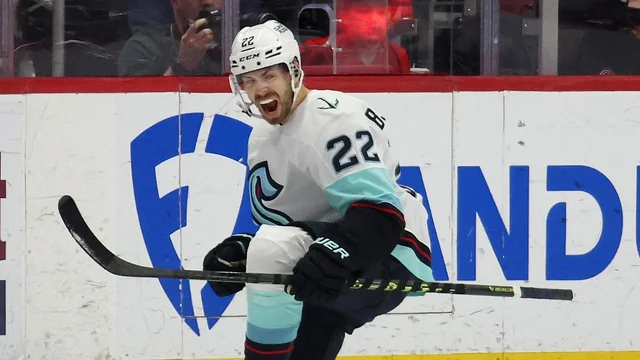
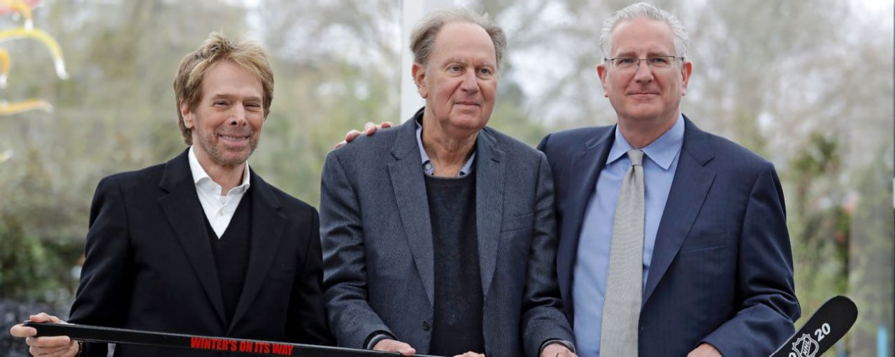

Bjorkstrand scores twice for Kraken in 5-1 win over Bruins
12/12/2024

Oliver Bjorkstrand scored twice and Philipp Grubauer made 33 saves as the Seattle Kraken beat the Boston Bruins 5-1 on Thursday night.
Jaden Schwartz and Vince Dunn also scored for the Kraken. Jared McCann had an empty-net goal and an assist, and Shane Wright added two assists.
Brad Marchand scored on a penalty shot for Boston in the second period.
Seattle jumped to a 2-0 lead early in the first. Bjorkstrand scored on a power play 24 seconds into the game, just eight seconds after David Pastrnak took a double minor for high-sticking. Schwartz backhanded the puck over goalie Joonas Korpisalo about five minutes later.
Dunn batted the puck into Boston’s net early in the third period and the goal stood after a replay review. Seattle made it 4-1 when Wright set up Bjorkstrand for his 11th goal at 9:16.
Bjorkstrand has 14 points in his last 11 games.
Takeaways
Kraken: A total of 10 skaters recorded at least a point for Seattle.
Bruins: Have allowed 13 goals in the first two games of their road trip.
Key moment
A shot by John Beecher slipped underneath Grubauer with 9:32 left in the second period, and Brandon Montour dove into the paint to stop the puck. A review determined the puck did not completely cross the goal line, but Montour was penalized for covering the puck in the crease. Marchand was awarded a penalty shot and scored.
Key stat
The Bruins outshot the Kraken 34-21.
Up next
The Kraken host Tampa Bay on Saturday, when the Bruins continue their five-game trip in Vancouver.
David Bonderman, who led Kraken ownership group, dies at 82
12/11/2024

David Bonderman, a lawyer and investor who managed money for one of the richest families in Texas, helped create one of the giants of the private-equity business and pushed to bring professional hockey to Seattle, died Wednesday. He was 82.
Asset management firm TPG, which Bonderman co-founded, the Seattle Kraken, Bonderman's family and his Wildcat Capital Management investment company announced his death.
For much of his career, Bonderman kept a low profile in public, rarely granting interviews with news organizations. He concentrated on corporate takeovers and other investments, many of which were highly profitable.
Forbes magazine estimated his wealth at $6.5 billion in March 2023.
"Rarely the loudest person in the room, but often the smartest, David remained humble, once saying that his personal strength was 'Not knowing a lot about something but knowing enough to make a decent decision,'" a statement from his family and companies said.
Born in Los Angeles on Nov. 27, 1942, Bonderman attended the University of Washington and Harvard Law School, from which he graduated in 1966.
After a stint teaching law at Tulane University, he joined the U.S. Justice Department in the late 1960s, then in 1971 became a partner and expert in corporate and securities law at Arnold & Porter, a high-powered Washington, D.C., law firm.
In 1983, he went to work for the Robert M. Bass Group investment company in Fort Worth, Texas. With money from the Bass family, which traced its wealth to the exploits of Texas oil wildcatter Sid Richardson, Bonderman and partner Jim Coulter made several leveraged buyouts in the 1980s, including a hugely profitable investment in Continental Airlines.
Bonderman and Coulter started Texas Pacific Group in 1992. According to its website, the private-equity firm now known as TPG manages $239 billion in assets and has invested in industries that include health care, technology and business services. The firm was a major early investor in short-term rental site Airbnb and music streaming service Spotify.
Bonderman served on several corporate and philanthropic boards. In 2017, he resigned from the Uber board hours after an employee meeting on sexism at the ride-hailing company.
When fellow director Arianna Huffington said data showed that having one woman on the board made it more likely a second would be added, Bonderman interjected, "Actually, what it shows is that it's much more likely to be more talking." He later apologized.
In politics, Bonderman was a longtime backer of former Texas governor and Republican President George W. Bush but flipped to support Democrat John Kerry in the 2004 presidential election. He famously told The Wall Street Journal that Bush was "a really good guy" but had divided the country.
"He's turning out to be the worst president since Millard Fillmore -- and that's probably an insult to Millard Fillmore," Bonderman said.
With his wealth from TPG, Bonderman purchased a minority stake in the Boston Celtics and was a member of the group holding a majority interest in the Seattle Kraken, an expansion team in the National Hockey League.
Bonderman also threw lavish birthday parties. The Rolling Stones played at his 60th birthday bash, and Paul McCartney headlined his 70th birthday soiree. Both events were in Las Vegas.
His survivors include five children and three grandchildren.